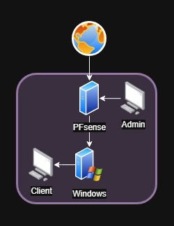

AC31.03
Réaliser une maquette de démonstration du projet
Lors de ce projet académique, j'ai eu l'opportunité de concevoir et de mettre en place une infrastructure WiFi avancée. L'objectif principal était de créer un réseau sans fil sécurisé et performant, en utilisant des technologies modernes telles que le WiFi 6 et le protocole d'authentification 802.1X, mais aussi PfSense.
